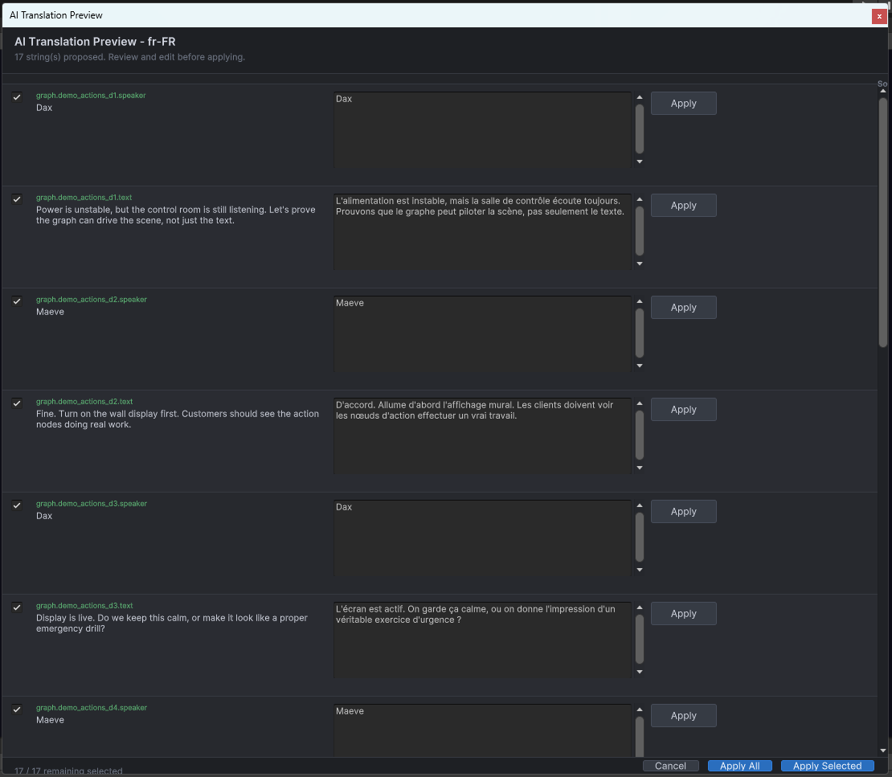

Command Workflows
The floating AI Assistant panel exposes a wide command surface, but the commands are still grouped by clear workflow types: narrow rewrites, draft generation, branch extension, translation, repair, and plan-style graph authoring.
What the floating AI Assistant panel includes
- provider and status summary
- rewrite options and quick action buttons
- natural-language command box
- context mode selector
- AI context preview
Command families
| Family | Examples | Result shape |
|---|---|---|
| Single-node rewrite | Rewrite dialog, grammar fix | Current vs proposed text preview |
| Branch growth | Continue branch, add dialog nodes, expand selected node | Draft node preview before apply |
| Choice assistance | Suggest choices, add choice node | Choice draft list or inserted choice structure |
| Action assistance | Insert action node, generate payload JSON | Draft payload or node insertion preview |
| Editor assistance | Repair layout, localization redirects | Editor tool route or guided translation flow |
| Broad authoring | Generate flow draft, graph operation plan | Structured review surface |
Command reference: what users can do with it
| Command | What users can do |
|---|---|
| Rewrite Selected Dialog | Rewrite one selected dialog line while keeping the graph structure unchanged. Useful for tone, wording, brevity, or style changes. |
| Fix Grammar | Clean up grammar and punctuation on a selected line without asking for broader structural changes. |
| Continue Branch | Extend the currently selected branch with more dialogue after the anchor node. |
| Add Dialog Nodes | Insert one or more new dialog nodes after a selected anchor, such as "add 3 lines after this." |
| Suggest Choices | Create choice ideas or a choice node with candidate answers and optional follow-up structure. |
| Insert Action Node | Insert an action node after the selected node, including suggested action IDs and payload assistance. |
| Batch Rewrite By Speaker | Rewrite many lines for one speaker in one review pass while still approving the output before apply. |
| Generate Dialog Flow Draft | Draft a structured conversation flow using the current graph context or a selected DialogSpecificationSO. |
| Generate Narrative Scene | Scaffold a higher-level narrative scene draft before graph content is committed. |
| Smart Continue Branch | Continue a selected branch using more graph context than a simple continuation command. |
| Scaffold Quest Dialogue | Generate quest-oriented dialogue structure with setup, objective framing, and resolution beats. |
| Repair Layout | Run graph layout cleanup from the editor workflow to re-space nodes more cleanly. |
| Translation Commands | Translate a selected node, a branch, a whole graph, or localization rows through the localization workflow rather than the generic command path. |
Representative command surface
public static readonly string[] PublicCommandSurface =
{
"RewriteDialog",
"GrammarFix",
"ContinueBranch",
"AddDialogNodesAfter",
"SuggestChoices",
"AddChoiceNodeAfter",
"InsertActionNode",
"BatchRewriteBySpeaker",
"GenerateDialogFlowDraft",
"GenerateNarrativeScene",
"SmartContinueBranch",
"ScaffoldQuestDialogue",
"RepairLayout",
"TranslateSelectedNode",
"TranslateSelectedBranch",
"TranslateWholeGraph",
"BatchTranslate"
};Preview-first behavior
Implemented command flows are intentionally draft-first. The extension does not silently apply text or graph mutations in the background. The preview window is part of the workflow contract.
Anchor-sensitive commands
Several routes rely on a selected anchor node or an unambiguous starting point. If the route is valid but the anchor is unclear, the workflow stops and asks for clearer selection or intent instead of guessing.
Commands that usually need one selected node
- rewrite selected dialog
- fix grammar
- continue branch
- add dialog nodes after anchor
- suggest choices
- insert action node
Localization and editor-tool routes
Not every AI-sounding request goes through content generation. Translation and localization prompts intentionally redirect to dedicated localization tooling, while layout repair and similar actions can route into editor-owned tools instead of freeform text generation.
Command in graph context

Natural-language commands are interpreted in graph context, with route detection visible before the command runs.
Preview window

Preview windows keep the author in control before text or node changes are committed.